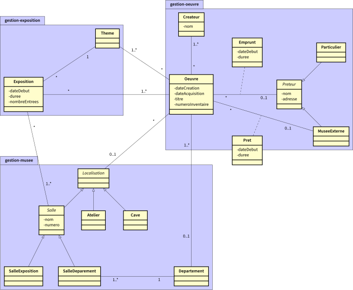

2A BUT - IUT d'Orsay Qualité de développement - 2024/2025
Diagramme UML de paquetages
Le support de cours
L'exercice
Exercice : Modèle d'analyse en UML d'un musée.
Un conservateur de musée désire conserver toutes les informations nécessaires au bon fonctionnement de celui-ci. Vous l'avez interrogé,
et voici les notes que vous avez prises :
Toute œuvre a un nombre quelconque de créateurs, une date de création, une date d’acquisition, un titre et un numéro d’inventaire.
Une oeuvre peut être :
exposée dans l'une des salles du musée (qui est caractérisée par un numéro, un nom),
dans l'atelier d'un restaurateur, chaque atelier est spécialisés (peinture, sculpture, poterie...),
stockée dans les caves du musée,
ou prêtée à un autre musée (nom et adresse de ce musée, date de début et duré du prêt),
Certaines oeuvres exposées dans le musée peuvent avoir été empruntées, soit à un autre musée, soit à un
particulier (nom, adresse); Chaque emprunt possède une date de début et une date de fin.
Le conservateur garde l'ensemble des musées et des particuliers qui ont prêté ou qui sont susceptibles de
prêter des oeuvres. Pour chacun (musée ou particulier), il garde le nom, l'adresse et les oeuvres qui
l'intéressent.
Quand il organise une exposition, le conservateur doit pouvoir retrouver les oeuvres correspondant au
thème (la peinture du XVIII, la mythologie à la renaissance, ...) de l'exposition qu'elles appartiennent au
musée ou soient empruntables.
A toute exposition correspond un thème (art primitif, peinture du 18ème, renaissance, ...) un nombre
d’entrées et un ensemble d’œuvres.
Le musée est constitué de différents départements en charge chacun d'une partie des œuvres.
Certaines des salles d'exposition sont affectées à un département, d'autres sont réservées pour les
expositions temporaires.
Travail à faire
Proposez un diagramme de classes qui permette au conservateur de retrouver toutes les informations nécessaires au bon fonctionnement du musée.
Par exemple : pour chaque œuvre, fournir toutes les informations la décrivant ; pour une exposition passée, donner toutes les œuvres exposées,
donner toutes les informations concernant les prêteurs éventuels ...
Proposez un découpage du diagramme de classes en paquetages.

2A BUT - IUT d'Orsay Qualité de développement - 2024/2025